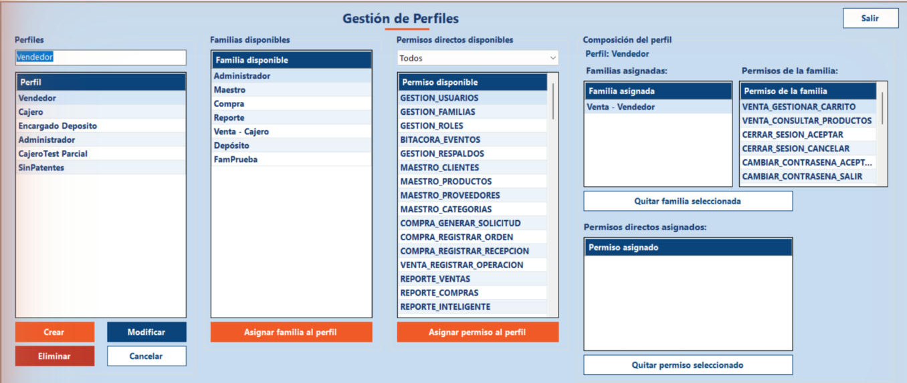

Inicio › Administrador › Gestión de Perfiles
Gestión de Perfiles
El perfil es el rol que se le da a cada usuario (Vendedor, Cajero, Administrador...). Un perfil se arma sumándole familias de permisos y, si hace falta, algún permiso suelto. Lo que tenga el perfil es lo que el usuario ve en el menú.
Dónde está: Administrador › Gestión de perfiles › Gestión de PerfilesLo usa: AdministradorAtajo: F1
Pasá el mouse por encima de cualquier botón o campo de la pantalla para ver qué hace.

Qué hace cada elemento
- 1Nombre del perfilEscribí el nombre de un perfil nuevo o cambiá el del perfil seleccionado. Hasta 50 caracteres.
- 2Lista de perfilesTodos los perfiles que existen. Al elegir uno, a la derecha se ve de qué está compuesto.
- 3CrearCrea un perfil nuevo con el nombre escrito. Empieza vacío: después le sumás familias o permisos.
- 4ModificarCambia el nombre del perfil seleccionado.
- 5EliminarBorra el perfil seleccionado. No se puede si tenés usuarios asignados o si es el perfil que estás usando.
- 6CancelarLimpia la pantalla y vuelve a cargar las listas.
- 7Familias disponiblesLas familias que se le pueden sumar al perfil seleccionado. Elegí una y tocá el botón de abajo.
- 8Asignar familia al perfilLe suma al perfil la familia elegida: el perfil recibe de golpe todos los permisos de esa familia.
- 9Filtro por móduloAcota la lista de permisos sueltos por módulo. "Todos" muestra todos.
- 10Permisos directos disponiblesPermisos sueltos que se pueden dar al perfil sin pasar por una familia. Sirven para casos puntuales.
- 11Asignar permiso al perfilLe da al perfil el permiso suelto que elegiste.
- 12Familias asignadasLas familias que ya tiene el perfil. Arriba dice de qué perfil se trata ("Perfil: ...").
- 13Permisos de la familiaLo que incluye la familia elegida en la lista de al lado. Es solo para mirar.
- 14Quitar familia seleccionadaSaca del perfil la familia elegida en Familias asignadas.
- 15Permisos directos asignadosLos permisos sueltos que tiene el perfil además de los que traen sus familias.
- 16Quitar permiso seleccionadoSaca del perfil el permiso suelto elegido en la lista.
- 17SalirCierra esta pantalla y vuelve al menú principal.
Cómo hacerlo
Por ejemplo, un perfil "Supervisor".
- Escribí el nombre en el campo de arriba a la izquierda y tocá Crear.
- Elegí el perfil nuevo en la lista.
- En Familias disponibles elegí una familia y tocá Asignar familia al perfil. Repetí con las que necesite.
- Si falta algo muy puntual, buscalo en Permisos directos disponibles y tocá Asignar permiso al perfil.
Tené en cuenta: Para que alguien use el perfil, después hay que asignárselo en Gestión de usuarios.
- Elegí el perfil en la lista.
- Para sumar acceso, asigná una familia o un permiso suelto.
- Para sacar acceso, elegí la familia o el permiso en el panel de la derecha y tocá el botón Quitar correspondiente.
- Los usuarios con ese perfil ven el cambio la próxima vez que inicien sesión.
Tené en cuenta: Los permisos "Cambiar contraseña" y "Cerrar sesión" son obligatorios en todos los perfiles y no se pueden quitar.
- Elegí el perfil en la lista.
- Tocá Eliminar.
- Si tiene familias o permisos, el sistema te avisa que se van a quitar. Confirmá con Sí.
Tené en cuenta: No se puede eliminar un perfil que tenga usuarios asignados: primero hay que reasignarlos o eliminarlos. Tampoco el perfil que estás usando vos.
Para saber más
Mensajes que puede mostrar el sistema 18
| Mensaje | Qué significa y qué hacer |
|---|---|
| AvisoDebe seleccionar un Perfil. | Elegí un perfil en la lista antes de usar Modificar, Eliminar o cualquiera de los botones de asignar o quitar. |
| AvisoDebe ingresar un nombre. / Debe ingresar un nombre válido. | El campo del nombre está vacío. |
| AvisoEl nombre no puede superar los 50 caracteres. | Acortá el nombre. |
| ErrorYa existe un Perfil con ese nombre. | No se pueden repetir nombres de perfil. |
| AvisoDebe seleccionar una Familia. / Debe seleccionar un Permiso. | Falta elegir en la lista el elemento a asignar. |
| AvisoDebe seleccionar una Familia para quitar. / Debe seleccionar un Permiso para quitar. | Falta elegir en el panel de la derecha lo que querés sacar. |
| ErrorEl componente ya pertenece a este elemento. | El perfil ya tiene esa familia o ese permiso. |
| ErrorEste permiso ya está incluido en la familia '...', asignada a este perfil. | No hace falta darlo suelto: el perfil ya lo recibe por esa familia. |
| ConfirmaciónEsta familia comparte permisos con otra ya asignada a este perfil. ¿Desea asignársela igual? | Podés seguir sin problema: si un permiso está en las dos familias, el perfil lo tiene una sola vez. |
| AvisoEsta familia ya incluye permisos que tenías asignados sueltos. Se quitaron de los permisos directos... | Pasa solo: lo que ya trae la familia no se deja duplicado como permiso suelto. El mensaje lista cuáles se quitaron. |
| ErrorEsta patente es obligatoria en todos los perfiles (cambiar contraseña y cerrar sesión) y no se puede quitar. | Esos permisos siempre tienen que estar. |
| ErrorNo puede quitar este permiso del perfil Administrador: dejaría al sistema sin forma de administrar permisos. | El sistema protege al Administrador para que siempre alguien pueda gestionar accesos. |
| ErrorNo puede eliminar el perfil que está usando actualmente. | Entrá con otro usuario si querés borrar ese perfil. |
| ErrorNo se puede eliminar el perfil: hay usuarios asignados a él. Reasigne o elimine esos usuarios primero. | Andá a Gestión de usuarios, cambiales el perfil y volvé a intentar. |
| ConfirmaciónEl perfil tiene familias o permisos asignados. Si lo elimina, se quitarán todas las asociaciones. | Se borra el perfil junto con sus asignaciones. |
| ConfirmaciónEstá quitando una familia / un permiso de su propio perfil. Perderá acceso la próxima vez que inicie sesión. | Si confirmás, vos mismo vas a perder esa función al volver a entrar. |
| AvisoModificó el nombre de su propio perfil. Debe cerrar sesión e iniciar nuevamente para que el cambio tome efecto. | Cerrá sesión y entrá de nuevo. |
| ListoPerfil creado / modificado / eliminado correctamente. Familia o permiso asignado / quitado correctamente. | La operación se guardó. |
Reglas a tener en cuenta 5
- Solo el Administrador puede entrar a esta pantalla.
- Un perfil recibe permisos por dos vías: las familias que tiene y los permisos sueltos. Es más prolijo trabajar con familias y usar permisos sueltos solo en casos puntuales.
- Si un permiso llega por una familia, el sistema no deja darlo también suelto.
- Cada botón depende de los permisos de tu perfil: si aparece gris, tu perfil no lo tiene.
- Los cambios de un perfil se ven en el menú de sus usuarios la próxima vez que inicien sesión.
Temas relacionados
SneakRush · Ayuda del sistema · Gestión de Perfiles. Podés abrir esta ayuda desde cualquier pantalla con la tecla F1.